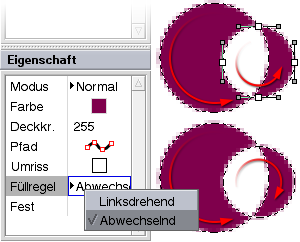
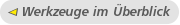

Objekte auswählen |
|||||||||||||||||||
|
Dieses Werkzeug ermöglicht das direkte Auswählen von Objekten auf der Bildfläche durch Anklicken oder Aufziehen eines Rahmens. Der Konfigurationsbereich des Werkzeugs enthält eine Auswahlmaske, die die anwählbaren Objekttypen festlegt. Mit den Knöpfen Alles bzw. Keines können schnell sämtliche Objekte ausgewählt oder die Auswahl aufgehoben werden. Die gleichen Knöpfe im Anwählbar-Bereich beziehen sich hingegen nur auf die Auswahlmaske.
|
|||||||||||||||||||
| |||||||||||||||||||
Zwischenablage |
|||||||||||||||||||
|
Dieses Wekzeug dient dem Kopieren von Bilddaten in die systemweite Zwischenablage. Es erlaubt die Definition eines rechteckigen Bereichs auf der Bildfläche, welcher durch Klicken auf's Anwenden Icon als Bilddaten kopiert wird. Diese können in WonderBrush oder anderen Programmen wieder eingefügt werden. In WonderBrush können Daten aus der Zwischenablage durch Wahl von Bearbeiten->Einfügen eingefügt werden. Das Vorhandensein von Bilddaten in der Zwischenablage wird durch die Anwählbarkeit dieses Menüpunktes angezeigt. Das Einfügen erzeugt ein neues Bilddatenobjekt und wechselt automatisch zum Transformationswerkzeug.
|
|||||||||||||||||||
| |||||||||||||||||||
Beschneiden |
|||||||||||||||||||
|
Mit dem Beschneiden Werkzeug können Dokumente sowohl zugeschnitten als auch erweitert werden. Wenn die Subpixel Option aktiviert ist, rastet der Rahmen, mit dem die neue Bildgröße angegeben wird, nicht nur auf feste Pixelpositionen ein. Dies führt dazu, dass Objekte bei Bestätigung des Werkzeugs geringfügig verschoben werden.
|
|||||||||||||||||||
| |||||||||||||||||||
Transformieren |
|||||||||||||||||||
|
Dieses Werkzeug stellt einen Rahmen um die in der Liste ausgewählten
Objekte dar, mit dessen Hilfe diese als Gruppe verschoben, gedreht
oder skaliert werden können. Sobald der Rahmen manipuliert wird,
startet die Transformation, welche solange bearbeitet werden kann,
bis das Anwenden-Icon betätigt wird. Innerhalb dieser Aktion
können einzelne Bearbeitungsschritte an der Transformation
rückgängig gemacht werden. Wurde die Transformation
angewendet, kann sie nur noch als Ganzes rückgängig gemacht
werden. Außerdem wird der Rahmen zurückgesetzt, so dass
eine neue Transformation begonnen werden kann.
|
|||||||||||||||||||
| |||||||||||||||||||
Farbverlauf bearbeiten |
|||||||||||||||||||
|
Mit diesem Werkzeug kann die Farbverlauf-Eigenschaft eines
ausgewählten Objektes bearbeitet werden. Dazu muss die
(Füll-)Modus-Eigenschaft des Objekts auf
Farbverlauf
stehen. Wenn ein entsprechendes Objekt ausgewählt ist, zeigt
das Werkzeug einen Rahmen um die Fläche an, über die
sich der Farbverlauf erstreckt. Mit diesem Rahmen kann der
Farbverlauf transformiert werden. Der Konfigurationsbereich des
Werkzeugs zeigt neben weiteren Einstellungen ein Kontrollfeld an,
mit welchem die Farben des Verlaufs bearbeitet werden können.
Durch Anklicken wird der aktive Verlaufspunkt gesetzt, was gleichzeitig
die aktuelle Farbe anpasst. Wird
die aktuelle Farbe verändert während ein Verlaufspunkt aktiviert
ist, so überträgt sich die Farbe automatisch auf diesen Verlaufspunkt.
Auch der Deckkraft Regler bezieht sich auf den momentan aktiven
Verlaufspunkt. Die Option Transformation erben legt fest, ob die Farbverlaufstransformation unabhängig vom Objekt sein soll oder nicht. Standardmäßig wird ein Farbverlauf zusammen mit dem Objekt verschoben, welches er füllt.
|
|||||||||||||||||||
| |||||||||||||||||||
Pinsel |
|||||||||||||||||||
|
Am besten funktioniert das Pinselwerkzeug mit einem Grafiktablet, weil dann Deckkraft, Radius und Schärfe dynamisch mit dem Stiftandruck kontrolliert werden können. Die Kontrolle dieser Parameter mittels Stiftandruck wird anhand des kleinen Feldes mit dem Abwärtspfeil jeweils oben rechts über dem entsprechenden Schieberegler aktiviert. Der Schieberegler zeigt dann zwei Anfasser an, einen für den minimalen und einen für den maximalen Druck. Momentan werden nur kreisförmige Pinselspitzen unterstützt. Ein Klick auf die Pinselvorschau öffnet ein Fenster, in dem Sets von Pinseln bearbeitet und abgespeichert werden können. Die Option Subpixel bezieht sich darauf, ob Maus bzw. Stiftpositionen auch zwischen festen Bildpunktkoordinaten abgetastet werden sollen. Die Option Fest verursacht, dass keine Zwischenwerte für die Deckkraft des Pinselobjektes erzeugt werden. Der Abstände-Regler kontrolliert die Positionierung der Pinselform entlang des Pinselpfades.
|
|||||||||||||||||||
| |||||||||||||||||||
Stift |
|||||||||||||||||||
|
Dieses Werkzeug funktioniert sehr ähnlich zum Pinselwerkzeug, nur dass die Werkzeugspitze immer nur einen Bildpunkt breit ist. Deshalb gelten der Radius-, Schärfe- und Abständeparameter nicht.
|
|||||||||||||||||||
| |||||||||||||||||||
Radiergummi |
|||||||||||||||||||
|
In der Benutzung entspricht dieses Werkzeug genau dem Pinselwerkzeug, nur dass es automatisch die Modus-Eigenschaft der erzeugten Pinselobjekte auf Radieren setzt. Im Nachhinein können durch Setzen der Modus-Eigenschaft Pinselobjekte in Radiergummiobjekte umgewandelt werden und umgekehrt.
|
|||||||||||||||||||
| |||||||||||||||||||
Radierstift |
|||||||||||||||||||
|
Dieses Werkzeug hat die gleiche Beziehung zum Stiftwerkzeug, wie das Radiergummi- zum Pinselwerkzeug: Es werden Stiftobjekte im Radieren Modus erzeugt.
|
|||||||||||||||||||
| |||||||||||||||||||
Stempel |
|||||||||||||||||||
|
Mit diesem Werkzeug können Bildteile von einem Ort zum einem anderen übertragen werden, wobei die Objektform genau wie beim Pinselwerkzeug entsteht. Wird das Werkzeug aktiviert, so muss mit dem ersten Klick der Ursprungsort definiert werden. Der zweite Klick setzt dann die Verschiebungsrichtung und -länge fest und beginnt die Stempelfunktion. Um den Verschiebungsvektor neu festzulegen, muss kurz die Befehlstaste gedrückt werden (je nach Systemeinstellung ist das die Strg oder Alt Taste). Das interessante an der Stempelfunktion in WonderBrush ist, dass die Stempelobjekte aktualisiert werden, wenn sich der zu übertragende Bildinhalt ändert. Die Stempelfunktion wird also dynamisch erzeugt.
|
|||||||||||||||||||
| |||||||||||||||||||
Weichzeichner |
|||||||||||||||||||
|
Der Weichzeichner ist ein weiteres "pinselbasiertes" Werkzeug. Mit ihm lassen sich Bildbereiche verwischen, wobei dies selektiv innerhalb der gedachten Pinselform geschieht. Der Unschärferadius lässt sich momentan nur in der Eigenschaftenliste (nachträglich) ändern.
|
|||||||||||||||||||
| |||||||||||||||||||
Farbeimer |
|||||||||||||||||||
|
Dieses Werkzeug kann eine bestimmte Farbe im Bild durch eine andere ersetzen. Über den Parameter Toleranz lässt sich angeben, dass auch ähnliche Farben mitgefüllt werden. Anhand der Einstellung Weichheit spiegelt sich die benötigte Toleranz in dem Deckkraftkanal des erzeugten Objekts wider (also je größer die Abweichung von der Ausgangsfarbe, desto geringer die resultierende Deckkraft). Wenn die Option Zusammenhängender Bereich deaktiviert ist, werden sämtliche Bereiche des Bildes gefüllt, in denen die Ausgangsfarbe vorkommt, unabhängig davon, ob dadurch mehrere eigenständige Füllflächen entstehen. Ein Klick in die Bildfläche definiert die Ausgangsfarbe und erzeugt ein neues Farbeimerobjekt. Ein solches Objekt besitzt eine feste Deckkraftmaske (siehe Abschnitt "Objekte"), die in dem gesetzten Modus auf die Ebene übertragen wird. Durch Anpassen der Modus-Eigenschaft lassen sich Füllobjekte also auch zum Radieren oder für einen Farbverlauf verwenden.
|
|||||||||||||||||||
| |||||||||||||||||||
Text |
|||||||||||||||||||
|
Mit dem Textwerkzeug lassen sich nicht nur einfache Beschriftungen anlegen, sondern ganze Textblöcke setzen. Die Einstellungsmöglichkeiten sind entsprechend umfangreicher, aber die meisten Funktionen werden Sie sicher aus anderen Programmen schon kennen. Ein Klick in die Bildfläche erzeugt ein neues Textobjekt mit den aktuell eingestellten Parametern. Das Textwerkzeug zeigt auf der Arbeitsoberfläche eine Linie mit zwei Anfassern, mit denen sich die Textblockbreite und Absatzeinrückung einstellen lassen. Der Text wird zurzeit noch nicht direkt auf der Bildfläche eingegeben, sondern in dem Textfeld innerhalb des Werkzeugbereichs. Die wichtigsten Parameter wie Schriftart und -größe werden ebenfalls dort eingestellt, aber eine Vielzahl weiterer Parameter kann in der Eigenschaftenliste des Textobjektes angepasst werden. Einige vielleicht unverständliche Eigenschaften werden im Folgenden erklärt. Abstände ist ein Faktor für die Buchstabenlaufweite, mit dessen Hilfe sich die Buchstaben enger zusammen- oder weiter auseinandersetzen lassen. Zeilenabst. ist ein Faktor für den Zeilenabstand, wobei als Basis für den Abstand die Schriftgröße gilt. Absatzabst. ist wiederum ein Faktor und bezieht sich auf den Zeilenabstand zwischen zwei Absätzen in Relation zum sonst verwendeten Zeilenabstand. Hinting bedeutet, dass die Buchstabenformen etwas verzerrt und verschoben werden, so dass die wichtigen Formelemente besser auf Bildpunkte passen und somit die Lesbarkeit auf Bildschirmen verbessert wird. Bei skalierten oder rotierten Textobjekten verliert diese Option allerdings ihren Schärfungseffekt. Kerning beeinflusst die Abstände zwischen einzelnen Buchstaben und benutzt in der Schriftdatei eventuell vorhandene Zusatzinformationen, die das Schriftbild verbessern können. Wenn zum Beispiel auf ein großes T ein kleines e folgt, kann das e näher an das T herangeschoben werden, obwohl dadurch die normale Laufweite des Ts unterschritten wird. Folgt auf ein T ein h, wird die normale Laufweite des Ts benutzt, damit die Buchstaben sich nicht überschneiden. Ist Kerning deaktiviert, so wird immer die "normale" Laufweite benutzt, unabhängig von der Buchstabenkombination. Fest schaltet die Kantenglättung für die Buchstaben ab. Diese Option wird auch von anderen Objekttypen angeboten.
|
|||||||||||||||||||
| |||||||||||||||||||
Form |
|||||||||||||||||||
|
Mit dem Formwerkzeug lassen sich sogenannte Vektorpfade erstellen. Sie können die Begrenzung einer Fläche beschreiben oder als Linien bzw. Kurven mit bestimmter Breite dargestellt werden. Ein Vektorpfad verläuft durch sogenannte "Kontrollpunkte", und eben diese werden mit dem Formwerkzeug erstellt oder bearbeitet. Ein Kontrollpunkt besteht aus maximal drei "Unterpunkten". Der Vektorpfad verläuft in jedem Fall durch den Hauptkontrollpunkt. Die zwei weiteren Punkte legen jeweils die Tangente fest, mit der der Pfad in den Hauptpunkt eintritt und wieder austritt. Somit lassen sich sehr einfach beliebige Kurven beschreiben. Die vielfältigen Bearbeitungsmöglichkeiten zeigt WonderBrush anhand des Mauszeigers an. Neuen Punkt erzeugenWird mit der Maus in einen leeren Bereich geklickt, so wird ein neuer Kontrollpunkt erzeugt, wobei der Klick die Position des Hauptkontrollpunktes festlegt. Mit der gedrückten Maustaste lässt sich dann die Austrittstangente bearbeiten, wobei die Eintrittstangente automatisch gespiegelt wird. Punkt bearbeitenWird die Maus über einen bestehenden Punkt bewegt, so lässt sich dessen Position verschieben. Wird der Hauptkontrollpunkt verschoben, so werden die Tangentenpunkte mit verschoben. Beim Verschieben eines der Tangentenpunkte passt WonderBrush den anderen so an, dass sie in einer Linie bleiben. Diese Verbindung lässt sich auch aufheben, um eine Ecke im Pfad zu erzeugen (dazu gleich mehr). Punkt einfügenWird die Maus über den Vektorpfad selbst bewegt, so lässt sich an dieser Stelle ein neuer Punkt einfügen. Vorerst wird der Punkt so eingefügt, dass der Verlauf des Pfades erhalten bleibt, dazu werden der vorhergehende und nachfolgende Punkt angepasst. Wird mit gedrückter Maustaste gezogen, so wird wie beim "Punkt erzeugen" die Austrittstangente bearbeitet. Pfad schließenWird der erste Kontrollpunkt angeklickt, so wird der Pfad "geschlossen". Der Standardmodus für Bereiche außerhalb des Pfads ist dann nicht mehr "Punkte hinzufügen", sondern "Punkte auswählen". Pfade im Umrissmodus können nicht durch Klicken des ersten Punktes geschlossen werden. Bei diesen Pfaden erreicht man dies durch Aktivierung des Kontrollfeldes Geschlossen. Erweiterte FunktionenPunkt löschen
|
|||||||||||||||||||


|
Linksdrehend bedeutet, dass die Umlaufrichtung der Kontrollpunkte einen Einfluss auf die "außerhalb"/"innerhalb" Entscheidung hat: Linksdrehende Pfade gelten als Flächen, während rechtsdrehende Pfade als "Löcher" gelten - allerdings nur, wenn sie im Innern eines anderen Pfades liegen. |
Abwechselnd bedeutet, dass sich "innerhalb" und "außerhalb" jedes Mal abwechseln, wenn ein Subpfad einen neuen Bereich abgrenzt. In diesem Modus beschreiben Subpfade, die innerhalb der Fläche anderer Pfade liegen, auf jeden Fall ein "Loch". |
|

|
 |
Beachten Sie, dass diese Regeln nur für die Pfade eines einzelnen Formobjektes gelten. Mehrere Formobjekte auf einer Ebene beeinflussen sich nicht in der beschriebenen Weise, sondern überlagern sich als ganz normale Objekte. Um mehrere Formobjekte zu einem einzigen zusammenzufassen, wählen Sie die Option Objekte->Spezial->Formen verschmelzen. Dadurch entsteht aus den in der Liste markierten Formobjekten ein einzelnes Formobjekt, das alle Subpfade der zuvor eigenständigen Objekte enthält.
Um einen neuen Subpfad anzulegen, muss das Icon Neuer Pfad
aktiviert werden. Es bleibt aktiv, bis außerhalb der
bestehenden Pfade geklickt wird, um den ersten Kontrollpunkt
eines neuen Pfades zu setzen. (Um diesen Modus zu verlassen, benutzen
Sie das Abbrechen Icon oder die Esc Taste.)
Alternativ zum Aktivieren des Icons Neuer Pfad
können Sie auch jederzeit die Options Taste
gedrückt halten und durch Klicken einen neuen Subpfad starten.
Pfad umkehren 
Durch die Reihenfolge, in der die Kontrollpunkte angelegt wurden, ergibt sich eine Umlaufrichtung des Pfades. Da die Umlaufrichtung für die Füllregel Eigenschaft wichtig sein kann, braucht man die Möglichkeit, den Pfad umzukehren. Dies erledigt das Pfad umkehren Icon. Was vorher der erste Kontrollpunkt war ist dann der letzte usw. Außerdem ist diese Option interessant, wenn man neue Kontrollpunkte nicht mehr am Ende sondern am Anfang des Pfades hinzufügen möchte.
HinweisEin Doppelklick auf ein Formobjekt in der Objektliste startet die erneute Bearbeitung mit dem Formwerkzeug. |
Ellipse/(Abgerundetes) Rechteck
Diese Werkzeuge erzeugen ein vordefiniertes Formobjekt: eine Ellipse oder ein Rechteck. Durch Klicken und Ziehen wird das Objekt erzeugt und die Größe bestimmt. Mit zusätzlich gedrückter Shift (Umschalt) Taste kann das Seitenverhältnis beibehalten werden, so dass auch Kreise und Quadrate angelegt werden können. Später werden die Objekte wie normale Formobjekte behandelt, so dass die weitere Bearbeitung wieder im Formwerkzeug stattfindet.
HinweisDie Umlaufrichtung der erzeugten Formobjekte ist immer linksdrehend. |
| Tastaturkürzel | |
|---|---|

|
Seitenverhältnis bei Skalierung fixieren
(ergibt Kreis oder Rechteck bei neuem Objekt) Verschiebung auf horizontale oder vertikale Richtung begrenzen |


|
Ellipse/Rechteck um einen Bildpunkt verrücken |
Pipette
Die Pipette dient dem Aufnehmen von Farben aus dem Bild. Dadurch wird einfach die aktuelle Farbe gesetzt. Entsprechend der Größe der Spitze wird dabei auch eine Mischfarbe aus mehreren Bildpunkten berechnet.
Hilfslinien
Hilfslinien helfen bei der Ausrichtung von Objekten, sind aber
selbst nicht Bestandteil des Bildes und können auch
ausgeblendet werden. Mit dem Neu Icon wird eine neue Hilfslinie
an der durch die anderen Kontrollfelder definierten Stelle
angelegt. Eine aktive Hilfslinie wird hellrot dargestellt und kann
mit den Eingabefeldern exakt positioniert werden. Bei einem Winkel
von Null Grad sind Hilfslinien genau senkrecht und bei 90 Grad
entsprechend waagerecht.
Das Leonardo da Vinci Icon verschiebt die aktive
Hilfslinie auf die Position des nächstgelegenen Goldenen Schnittes.
Auf die Bildhöhe und -breite bezogen gibt es jeweils zwei Goldene Schnitte.
| Tastaturkürzel | |
|---|---|
| Aktive Hilfslinie löschen | |
|
|
Aktive Hilfslinie um einen Bildpunkt verrücken |
|  |